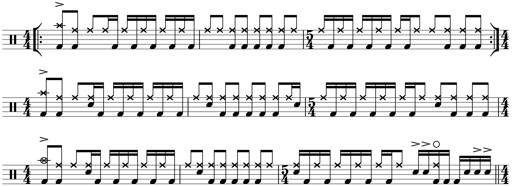
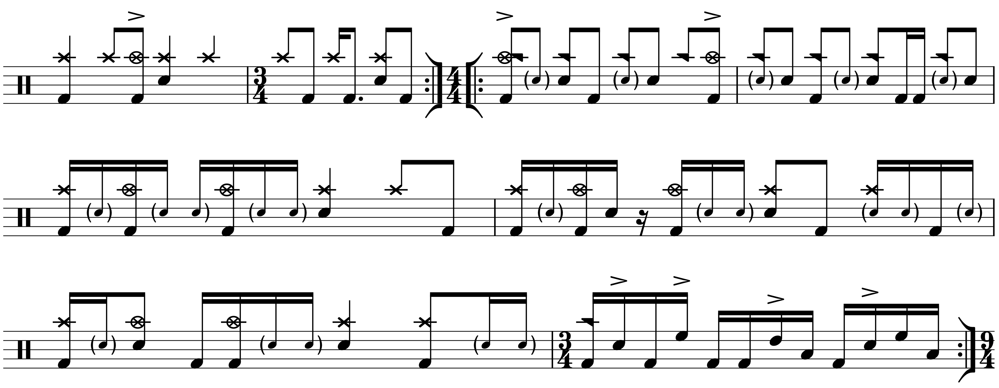
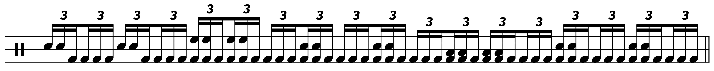

Transcription: “Cafo” — Animals as Leaders
Posted on March 20, 2022

I really have no business doing this… but there’s no denying that, even 13 years later, the first Animals as Leaders album still puts quite a spell on people, especially drummers. If you go to the music video for the album’s standout track, “Cafo”, you’ll see tons of people gushing over the drumming.
Well, here’s the thing: the drums are programmed. It’s actually pretty obvious. They don’t sound very good, the hats and ride cymbals are typically ignored in favor of crash/china cymbal barrages, and a lot of the licks don’t really make sense from a drummer’s perspective.
I can’t be too hard on the LP; it was basically a two-man job between AAL frontman Tosin Abasi and producer Misha Mansoor, and I’m guessing there was little to no budget.
The songwriting is still top–notch, and I’ll admit that there’s something fascinating about drum parts cooked up by guitarists.
I started transcribing the drums ages ago (to understand the rhythmic structure more than anything else), but I never got around to finishing it, so it sat on my computer unfinished. I partly lost motivation because I was getting too caught up in note–for–note subtleties that really wouldn’t give me much to learn from. In addition, there’s a transcription by Troy Wright that’s been floating around the internet for some time. It’s kind of messy, but for most, it works fine.
Earlier this year, someone shared an excerpt of them drumming along to the track on r/drums, and I had a bit of fun breaking down the drums for other users. With a new AAL album coming out next week, I decided to finish this up. As I said, the tune is captivating nonetheless, and the project at least gave my ears a workout.
I opened up the sheet music with the guitar sweep, mainly for giggles. The first measure is 8 beats long, but I doubt the sweep cue would actually help anyone keep track of the pulse.
The first thing to discuss is the big ensemble figure that the full band plays, and the drum part here has confused many drummers for years. When I first heard “Cafo”, I thought this section had some sort of buzz roll sample being played underneath the big 8th note hits.
But after giving it a closer listen, I’m pretty sure the drums are playing 16th note triplets, ghosted on the snare. I had to skimp out on the sheet music because stuffing a measure of 9/4 with 16th note ghost notes looked horrible. The idea is easy enough: just play 16th note triplets between the 8th notes.
Currently, the upper limit for me to play 16th note triplets comfortably is 150 BPM. This is at 155, so it is possible. FWIW, current AAL drummer Matt Gartska plays the triplets as singles, while previous AAL drummer Navene Koperwies used puh–duh–duhs (RLL).
Afterward, we are (eventually) introduced to the main 9/4 groove that drives the song:
Note how the kick drum is played in unison with the snare backbeats. Also, note the seemingly random crashes on the “+” after 4 and on beat 8. I wonder if there was anything about the guitar riff that made Misha highlight those beats:
Your guess is as good as mine.
The next big section is perhaps the most infamous since it’s built around a pretty disorienting riff (which is mirrored by the kick drum). The idea behind it is actually pretty simple: it’s all 8th notes, but the secret is that the kick alternates between 8th notes that are right on the beat, and 8ths that are on the 16th note off–beat:
I’ve seen many interpretations of the time signature. The riff lasts 13 quarter notes, but the guitars don’t seem to suggest any clear downbeats within the phrase. Troy’s transcription uses alternating meters of 6/4 and 7/4, while some explanations make use of 15/16. Personally, I think the easiest way to count it is two bars of 4/4 and one bar of 5/4.
The drums then move to ride, with a ghost note pattern on the snare. I have given this section several close listens, and my best guess is that the ghost notes are played in between the ride cymbal notes. The ghost notes aren’t very articulate, and I have no real drummer to reference. But when the kick moves to the offbeats, I can’t hear the ghost notes, so I’m guessing the ghosts are being drowned out by the kick.
The backbeats follow a pattern of 4 quarter notes. If you tried to play the ghost notes as written, you’ll run into some challenging tap–accent–tap triple strokes on the snare:
Try them at your own risk.
The next big section is mainly in 4/4 (with a 3/4 turnaround). There’s some more ghost note action during the climax of this movement, featuring another triple stroke on the snare (tap–tap–accent):
It’s more playable than you think (definitely more so than the ghost notes from the previous movement). There’s also a linear fill at the end of the phrase, and I tried my best to make out the toms. For a lot of MIDI drum sets, toms tend to be either very punchy or very boomy (MuseScore has this problem). The toms kind of smear together, but the kick drum is at least correct.
Speaking of MIDI mysteries, there are a lot of cymbal sounds on this album. I think I can hear both a china cymbal and some sort of cymbal stack, especially in this section.
There’s another reprieve of the 9/4 riff, before a section that’s in 7/4 (I think it’s 7/4 anyway — you could count it with bars or 4/4 and 2/4). It’s at this point we have the closest thing I could describe as a change in dynamics.
Next up is the guitar solo, before a driving shuffle section that features a very busy kick drum part:
Again, notice the unison hits between the kick and snare. I must admit, the fill heard in the 3/4 bar is pretty bitchin’, although it’s spoiled somewhat by gratuitous cymbal hits. I think the exact cymbals change the second time through, but honestly, I don’t really care. The rhythms are the same.
After some more 9/4 riffing, we get to the finale, which features this rather hilarious–looking drum solo:
I’m pretty sure that’s what the drums are doing. It sounds better than it looks on paper!
Now that we are in a particularly salient era of artists re–recording albums, many have clamored for AAL to redo the debut. It’s not just the drums; the production, in general, is lackluster. It might be an exciting project, but I do have some nostalgia for the original album as is. It’s a bit of a mess, but it’s an endearing one.
It’s also tough to say how Matt would approach such a project — he seems to channel the energy of the original drums when playing these tunes live, so I don’t know how much interest he has in writing new drum parts. So maybe instead we should be excited for his own transcriptions of the drumming on the new record coming out this Friday.
“Cafo” on Songwhip.
Tags: 2022 • Transcription • Animals As Leaders